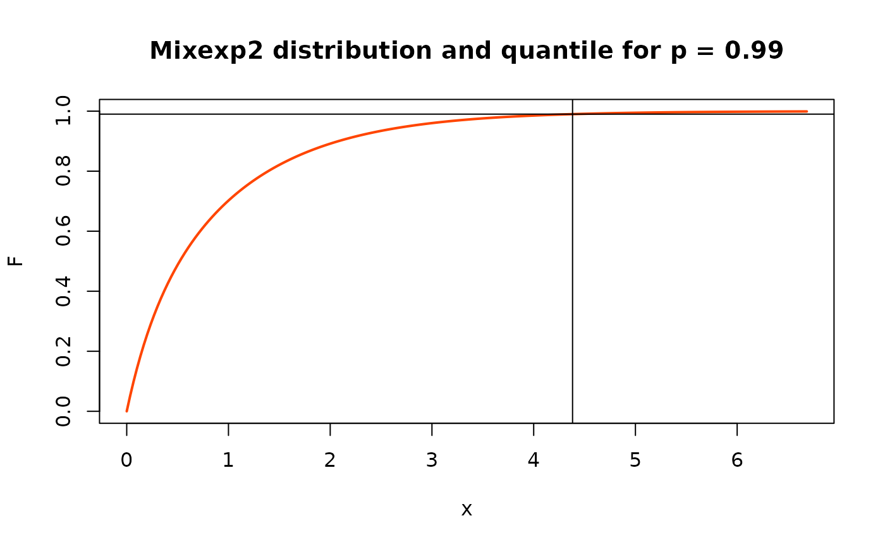

Mixture of two exponential distributions
MixExp2.RdProbability functions associated to the mixture of two exponential distributions.
Usage
dmixexp2(x, prob1,
rate1 = 1.0, rate2 = rate1 + delta, delta,
log = FALSE)
pmixexp2(q, prob1,
rate1 = 1.0, rate2 = rate1 + delta, delta,
log = FALSE)
qmixexp2(p, prob1,
rate1 = 1.0, rate2 = rate1 + delta, delta)
rmixexp2(n, prob1,
rate1 = 1.0, rate2 = rate1 + delta, delta)
hmixexp2(x, prob1,
rate1 = 1.0, rate2 = rate1 + delta, delta)
Hmixexp2(x, prob1,
rate1 = 1.0, rate2 = rate1 + delta, delta)Arguments
- x, q
-
Vector of quantiles.
- p
-
Vector of probabilities.
- n
-
Number of observations.
- log
-
Logical; if
TRUE, the log density is returned. - prob1
-
Probability weight for the "number 1" exponential density.
- rate1
-
Rate (inverse expectation) for the "number 1" exponential density.
- rate2
-
Rate (inverse expectation) for the "number 2" exponential density. Should in most cases be
> rate1. See Details. - delta
-
Alternative parameterisation
delta = rate2 - rate1.
Value
dmiwexp2, pmiwexp2, qmiwexp2, evaluates the
density, the distribution and the quantile functions. dmixexp2
generates a vector of n random draws from the distribution.
hmixep2 gives hazard rate and Hmixexp2 gives cumulative
hazard.
Details
The density function is the mixture of two exponential densities
$$
f(x) = \alpha_1 \lambda_1 \, e^{-\lambda_1 x} + (1-\alpha_1)
\lambda_2 \, e^{-\lambda_2x} \qquad x > 0
$$
where \(\alpha_1\) is the probability given in
prob1
while \(\lambda_1\) and\(\lambda_2\) are
the two rates given in rate1 and rate2.
A 'naive' identifiability constraint is $$\lambda_1 < \lambda_2$$
i.e. rate1 < rate2, corresponding to the simple constraint
delta > 0. The parameter delta can be given instead of
rate2.
The mixture distribution has a decreasing hazard, increasing Mean Residual Life (MRL) and has a thicker tail than the usual exponential. However the hazard, MRL have a finite non zero limit and the distribution behaves as an exponential for large return levels/periods.
The quantile function is not available in closed form and is computed using a dedicated numerical method.
Examples
rate1 <- 1.0
rate2 <- 4.0
prob1 <- 0.8
qs <- qmixexp2(p = c(0.99, 0.999), prob1 = prob1,
rate1 = rate1, rate2 = rate2)
x <- seq(from = 0, to = qs[2], length.out = 200)
F <- pmixexp2(x, prob1 = prob1, rate1 = rate1, rate2 = rate2)
plot(x, F, type = "l", col = "orangered", lwd = 2,
main = "Mixexp2 distribution and quantile for p = 0.99")
abline(v = qs[1])
abline(h = 0.99)
